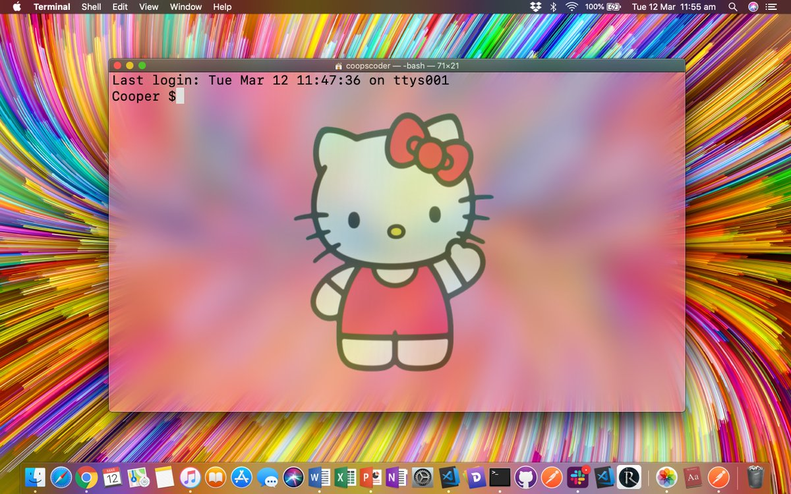

| Subject | Timeframe | Assignments | Tests | Presentations |
|---|---|---|---|---|
| Ruby | 3 Weeks | 1 | 1 | 1 |
| HTML | ? Weeks | - | 1 | |
| CSS | ? Weeks | - |
Orientation day!
Plenty of getting to know each other, some group exercises and a little beer at the end of the day.
If only every day would be this awesome!
Forever to be marked deep in my memory, after celebrating finishing the fortnight of intense Ruby work and excessive stress loads with a beer, then some more beers, followed by double burbons and sambuca, coupled with some personal stresses.
I melted down around midnight, shaving my hair off in the shower and passing out.
A lot can be said for making sure you pace yourself and get a good nights sleep.
Ruby started to ease up today as we have started doing a lot of revision, we got to submit ideas for the Terminal App and a partner (if we had one in mind), they are submitted in the evening and we find out in the morning if they're acceptable.
I went home unwell after hanging on all day feeling like the walking dead, so left it with the capable Tristan to submit our DatingApp idea.
Big day today, our idea was accepted.
We spent the morning on a Git revision, and while I am starting to understand the benefits of Git for version control the horribly counterintuitive nature of it drives me crazy.
Then after half a day of Git and Assignment guidlines we get to start working on it, while in retrospect I panicked a bit we ended up completing our basic application by 6pm.
We both decided that we just needed something functional to present and we achieved that by the end of the day.
Making the app look pretty sums up the day, we gradually decided to add things to the app, such as the ascii art and the chat feature at the end of the day.
Things I would work on next are the PowerPoint side of the presentation, we had time but didnt spend too much time on that.
Today Tristan and I presented our DatingApp.
Hilarity ensues, as is evident below.
Ruby Test, pretty sure I passed lol.
As we wrap up the 3 week stint of Ruby we started to touch on the following weeks learning of HTML and CSS with an introduction to UI and UX.
An example of Apple design can be found here, while we installed Figma to start planning for wireframes
Today is Labour Day, so lots of resting in Daylesford.
Today was the start of start of learning the origins of the internet and how it works (cute note: it was the internets 30th birthday)
Then we started HTML and CSS, hence I am starting this diary now and will backfill as much as I can.
I must decide on my next presentation topic, topic of my choosing that i can present for 5 mins.
P.S. while fucking around today I managed to gay up my computer terminal app, just a little.
To round out the day while trying to establish this blog in Git, we managed to delete the CSS file. So I was lucky enough to redo my sexy CSS style.
This morning on the train I settled on a topic for my presentation, I've always admired Shigeru Miyamoto and his design of Super Mario Bros.
In the hopes of tying in my presentation to design, I think this would be a great link given the parallel medium.
Intending to learn from my last presentation, I have some notes on my growth points.
Today I am also going to work on the floating button fixed at the bottom of the page, that will redirect back to the top.
Button success!
Three things I would like to attempt next.
Flexbox!
Now i know there's an easier way, lets see if I can transition my blog over to a flexbox without breaking it. hah! Using Flexbox I might like to put every part in it's own container so it can be stylised individually.
Flex success, quite painlessly actually I managed to transition the blog over without it breaking,as well as fixing the navbar so the text options are centered, and using transition to smooth the fading of the buttons in the nav.
Plan for future changes,
My attempt at building a form